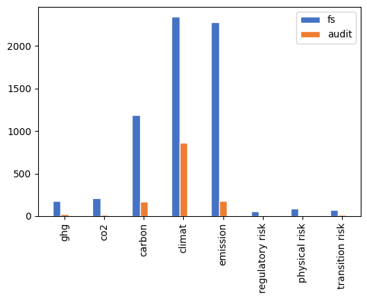

# ---
# title: "Connectivity Analyses"
# author: ["Maximilian A. Müller", "Gaizka Ormazabal", "Thorsten Sellhorn", "Victor Wagner"]
# institute: ["University of Cologne", "IESE", "LMU Munich School of Management", "LMU Munich School of Management"]
# number-sections: true
# toc: true
# format:
# html:
# toc: true
# jupyter: python3
# fig-width: 0.7
# ---Technical stuff
# echo: false
# output: asis
# # pdf:
# # geometry:
# # - paper=a4paper
# # fig-pos: 'h'
# beamer:
# aspectratio: 169
# header-includes: |
# \setbeamertemplate{navigation symbols}{}
# \setbeamertemplate{footline}[page number]
Warning
This is the technical step-by-step procedure. Not interesting.
Getting started
- imports
- SRN data
- (check which firms and documents are needed and which are already here); Currently, we base our analyses on the documents that have already been manually coded (bottom-up); in the future, however, we do it top-down based on Euro Stoxx 600
- read in document data
- read in manually coded documents
- check which have to be downloaded (b/c they are not here) and update
- check which have to be extracted (b/c it hasn’t been done) and update
- prepare for later analysis and merge with other data
import sys, os, json, re
import pandas as pd
import numpy as np
import matplotlib.pyplot as plt
import seaborn as sns
from scipy import stats
# path to Dropbox directory with 'pdf', 'pdf-decrypt', 'docs_clean.json' and 'raw_texts.json'
BASE_PATH = "/Users/victor.wagner/Dropbox/_Connectivity-Data"
# BASE_PATH = "/Users/victorwagner/Library/CloudStorage/Dropbox/_Connectivity-Data"API_PATH = "https://api.sustainabilityreportingnavigator.com/api"
companies = pd.read_json(f'{API_PATH}/companies')
documents = pd.read_json(f'{API_PATH}/documents')
indices = pd.read_json(f'{API_PATH}/indices')es600 = companies[['1cc738c1-e6b1-4f2b-8bec-2d963118de59' in ind for ind in companies.indices]]
# es600 = es600[['id', 'name', 'isin', 'country', 'sector']].merge(
# documents.query('type == "AR" & year in [2018, 2019, 2020, 2021, 2022]')[['id', 'year', 'type', 'company_id']],
# left_on='id', right_on='company_id',
# suffixes=('_company', '_document')
# )# set(es600.name).difference(set(manual_collections_all.name_comp))Read in manually collected start/end pages
from scripts.mergeManualCollections import mergeManualCollections
manual_collections_all = mergeManualCollections([
'../data/connectivity-manual_collection - lmu_cologne.csv',
'../data/connectivity-manual_collection-iese - main.csv',
'../data/connectivity-manual_collection-iese - second_round.csv',
'../data/connectivity-manual_collection-muhammad - lmu_only.csv',
'../data/connectivity-manual_collection-parth - lmu_only.csv'
])
manual_collections = manual_collections_all.dropna(subset=['fs_begin', 'fs_end', 'audit_begin', 'audit_end'], how='any')
print('We have', len(manual_collections), 'manually coded documents, of which',
len(set(manual_collections.index).difference(set([x[:-4] for x in os.listdir(BASE_PATH + "/pdf/")]))),
'are not downloaded.')
if len([x[:-4] for x in os.listdir(BASE_PATH + "/pdf/")]) > len(manual_collections.index):
print('There are even', len(set([x[:-4] for x in os.listdir(BASE_PATH + "/pdf/")]).difference(set(manual_collections.index))),
'documents too much.')We have 1448 manually coded documents, of which 0 are not downloaded.
There are even 21 documents too much.Sample Balance Checks
worldscope_msci = pd.read_csv('../data/worldscope_msci_carbon.csv')DtypeWarning: Columns (199,340) have mixed types. Specify dtype option on import or set low_memory=False.
worldscope_msci = pd.read_csv('../data/worldscope_msci_carbon.csv')es600a = es600.merge(
worldscope_msci.query('year == 2022').drop_duplicates('id'),
on="id",
suffixes=("_comp", "_other"),
indicator=True
)sample = es600a[es600a.id.isin(list(set(manual_collections.company_id)))]
all_es600 = es600a[es600a.id.isin(list(set(manual_collections_all.company_id)))]from scripts.doBalanceChecks import balanceCheckMultiple
sampleCheck2 = pd.DataFrame(
columns=['Sample', 'Full Euro STOXX 600', 'Difference', 'p-val']
)
print(
balanceCheckMultiple(
[
{'name': 'Assets (bn$)', 'test': 'ttest', 'attrs': ['ITEM7230', 1000000000]},
{'name': 'Sales (bn$)', 'test': 'ttest', 'attrs': ['ITEM7240', 1000000000]},
{'name': 'Employees (,000)', 'test': 'ttest', 'attrs': ['ITEM7011', 1000]},
{'name': 'MSCI Emiss. Score', 'test': 'ttest', 'attrs': ['mcarbon_emissions_score', 1]},
{'name': 'MSCI Emiss. Mgmt. Score', 'test': 'ttest', 'attrs': ['mcarbon_emissions_score', 1]},
{'name': '% GER', 'test': 'chisquare', 'attrs': ['country', 'Germany']},
{'name': '% GBR', 'test': 'chisquare', 'attrs': ['country', 'United Kingdom']},
{'name': '% FRA', 'test': 'chisquare', 'attrs': ['country', 'France']},
],
outDF = sampleCheck2,
sample = sample,
all_firms = all_es600
).to_markdown()
)| | Sample | Full Euro STOXX 600 | Difference | p-val |
|:------------------|---------:|----------------------:|:-------------|:--------|
| Assets (bn$) | 79.04 | 78.47 | 0.57 | 0.97 |
| Sales (bn$) | 19.53 | 18.36 | 1.17 | 0.59 |
| Employees (,000) | 42.6 | 40.02 | 2.57 | 0.58 |
| MSCI Emiss. Score | 9.11 | 9.14 | -0.03 | 0.71 |
| % GER | 0.2 | 0.12 | 0.08 | 0.8 |
| % GBR | 0.25 | 0.23 | 0.01 | 0.97 |
| n | 286 | 544 | - | - |
Use the following with caution, this will download, extract and clean all documents if they are not stored locally.
Update pdfs if not all are downloaded yet
from scripts.downloadPdfs import downloadPdfs
doc_status = downloadPdfs(
BASE_PATH,
zip(manual_collections['href_doc'],
manual_collections.index)
)
print('There were', sum([x == 'downloaded' for x in doc_status]), 'new downloads,',
sum([x == 'no download' for x in doc_status]), 'documents could not be downloaded.')There were 0 new downloads, 0 documents could not be downloaded.too_small_docs = [doc for doc in os.listdir(BASE_PATH + "/pdf/") if os.path.getsize((BASE_PATH+'/pdf/'+doc)) < 500000]
print('There are', len(too_small_docs), 'documents that are smaller than 0.5 MB (indicating corruption).')
# if len(too_small_docs) > 0:
# manual_collections_all.loc[[x[:-4] for x in too_small_docs]].to_csv('corrupted_docs.csv')
# print('A csv-file with a list of corrupted docs has been saved. Please download the docs manually.')There are 271 documents that are smaller than 0.5 MB (indicating corruption).Extract text from pdfs if not done so yet
raw_texts_old = pd.read_json(f"{BASE_PATH}/pdf/../raw_texts.json")
print('We already have raw text for', len(raw_texts_old.query('status == "fine"')), 'documents, decrypting and reading',
len(manual_collections)-len(raw_texts_old.query('status == "fine"')), 'documents now.')
from scripts.readTextFromPdf import readTextFromPdf
raw_texts_new, doc_status_new = [], []
raw_texts_new, doc_status_new = map(
list,
zip(*[readTextFromPdf(BASE_PATH, doc_id) for doc_id in manual_collections.index])
)
raw_texts_newDict = {doc_id: (r,s) for doc_id,r,s in zip(manual_collections.index, raw_texts_new, doc_status_new)}We already have raw text for 1185 documents, decrypting and reading 263 documents now.from scripts.updateRawTexts import updateRawTexts
raw_texts_final = updateRawTexts(raw_texts_old, raw_texts_newDict)
raw_texts_final.to_json(f"{BASE_PATH}/pdf/../raw_texts.json")
print('There are', sum([x == 'problem_decrypting' for x in raw_texts_final.status]), 'documents with decryption problems',
'and', sum([x == 'problem_opening' for x in raw_texts_final.status]), 'documents that could not be read.')
print('This leaves us with a readable sample of', sum([x == 'fine' for x in raw_texts_final.status]), 'documents.')There are 260 documents with decryption problems and 0 documents that could not be read.
This leaves us with a readable sample of 1185 documents.Clean text if not done so yet
docs_cleaned_old = pd.read_json(f"{BASE_PATH}/docs_clean.json")
print('There is already clean data for', len(docs_cleaned_old.query('status == "fine"')), 'documents, cleaning',
len(raw_texts_final.query('status == "fine"'))-len(docs_cleaned_old.query('status == "fine"')), 'documents.')
from scripts.updateAndCleanText import updateAndCleanText
docs_cleaned_new = updateAndCleanText(docs_cleaned_old, raw_texts_final)
docs_cleaned_new.to_json(f"{BASE_PATH}/pdf/../docs_clean.json")There is already clean data for 1177 documents, cleaning 8 documents.del raw_texts_final, raw_texts_new, raw_texts_newDict, raw_texts_old
del docs_cleaned_oldMerge other data to documents
# docs_cleaned_new.drop(columns=['clean_text_full'], inplace=True)
# docs = docs_cleaned_new.merge(
# documents[['id', 'company_id', 'year']],
# left_index=True, right_on='id'
# ).merge(
# companies[['id', 'name', 'isin', 'country', 'sector']],
# left_on='company_id', right_on='id',
# suffixes=('', '_company')
# ).set_index(
# 'id', drop=True
# ).drop(
# 'id_company', axis=1
# )# This is better as it preserves 'new' documents found by RA's where no
# document_id is in the SRN database
docs = pd.DataFrame(
columns=list(docs_cleaned_new.columns) + ['document_id', 'year', 'company_id', 'name', 'isin', 'country', 'sector']
)
for doc_id, doc in docs_cleaned_new.iterrows():
if '_' not in doc_id:
company_id = documents[documents.id == doc_id]['company_id'].values[0]
year = documents[documents.id == doc_id]['year'].values[0]
else:
company_id = doc_id[:36]
year = int(doc_id[-4:])
docs.loc[len(docs)] = [
doc[0], doc[1], doc[2], doc[3], doc[4], doc[5], doc[6], doc[7], doc[8],
doc_id,
year,
company_id,
companies[companies.id == company_id]['name'].values[0],
companies[companies.id == company_id]['isin'].values[0],
companies[companies.id == company_id]['country'].values[0],
companies[companies.id == company_id]['sector'].values[0]
]
docs.set_index('document_id', inplace=True)Merge manually coded section data
docs = docs.merge(
manual_collections[['mda_begin', 'mda_end', 'fs_begin', 'fs_end', 'audit_begin', 'audit_end']],
left_index=True, right_index=True
)# docs = docs.reset_index(
# ).merge(
# docs.groupby(
# ['company_id']).size().reset_index(
# ).rename(
# columns={0: 'company_years_avlbl'}), on='company_id'
# ).set_index('index')# Drop obvious outlier
docs.drop(docs[(docs['isin'] == 'ES0130670112') & (docs['year'] == 2020)].index, inplace=True)Main analyses
Document sample selection
We distributed the EURO Stoxx 600 firms to student assistants to extract information on the structure of annual reports. So far, this resulted in the following documents sample: 1. after removing not readable pdfs, 2. pdfs where no text was scanned, and 3. pdfs with too little words (documents where the average clean text characters are less than 1,500 in a document).
docs0 = docs.query('status == "fine"')
docs1 = docs0.query('clean_text_len > 0')
docs2 = docs1.query('avgCleanTextPerPage > 1500')
TpdfSample = pd.DataFrame(columns=['less', 'resulting'])
TpdfSample.loc['downloaded pdfs'] = ['', len(docs)]
TpdfSample.loc['1. not readable'] = ['-'+str(len(docs) -len(docs0)), len(docs0)]
TpdfSample.loc['thereof <0.5MB:'] = ['('+str(len(too_small_docs))+')', '']
TpdfSample.loc['2. zero text scanned'] = ['-'+str(len(docs0)-len(docs1)), len(docs1)]
TpdfSample.loc['3. chars/page < 1,500'] = ['-'+str(len(docs1)-len(docs2)), len(docs2)]
#print(TpdfSample.to_markdown(index=False))
#print('\nThis leaves us with', len(docs2['company_id'].unique()), 'unique firms.')TpdfSample| less | resulting | |
|---|---|---|
| downloaded pdfs | 1447 | |
| 1. not readable | -271 | 1176 |
| thereof <0.5MB: | (271) | |
| 2. zero text scanned | -37 | 1139 |
| 3. chars/page < 1,500 | -151 | 988 |
Keyword search
#from scripts.findSections import findSections
pd.options.mode.chained_assignment = None # default='warn'
docsa = findSections(docs2)search_patterns = ['ghg', 'co2', 'carbon', 'climat', 'emission', 'regulatory risk', 'physical risk', 'transition risk']
print(search_patterns)['ghg', 'co2', 'carbon', 'climat', 'emission', 'regulatory risk', 'physical risk', 'transition risk']lim = 200
def searchText(doc, search_patterns):
matches = []
for section in ['fs_text', 'audit_text', 'other_text']:
for pat in search_patterns:
for page, text in doc[section+'_dict'].items():
for hit in re.finditer(pat, text):
matches.append({
'pattern': pat,
'section': section[:-5],
'snippet': text[hit.start()-lim : hit.start()+len(pat)+lim],
'page' : page
})
return matches
docsa['hits'] = [pd.DataFrame(searchText(doc, search_patterns)) for _, doc in docsa.iterrows()]lim = 200
def searchText(doc, search_patterns):
matches = []
for section in ['fs_text', 'audit_text', 'other_text']:
for pat in search_patterns:
for page, text in doc[section+'_dict'].items():
for hit in re.finditer(pat, text):
matches.append({
'pattern': pat,
'section': section[:-5],
'snippet': text[hit.start()-lim : hit.start()+len(pat)+lim],
'page' : page
})
return matches
docsa['finhits'] = [pd.DataFrame(searchText(doc, ['asset', 'revenue', 'sales', 'employee'])) for _, doc in docsa.iterrows()]docsa['total_hits'] = [len(doc.hits) for _, doc in docsa.iterrows()]
docsa['avg_hits'] = docsa['total_hits'] / docsa['n_pages']
docsa['total_finhits'] = [len(doc.finhits) for _, doc in docsa.iterrows()]
docsa['avg_finhits'] = docsa['total_finhits'] / docsa['n_pages']# snippets = pd.DataFrame(columns=['document_id', 'isin', 'year', 'pattern', 'section', 'snippet'])
# for idx, doc in docsa.iterrows():
# for _, hit in doc.hits.iterrows():
# snippets.loc[len(snippets)] = [idx, doc['isin'], doc['year'], hit['pattern'], hit['section'], hit['snippet']]
# snippets.info()
# snippets.to_csv('snippets.csv', index=False)Analyses
import matplotlib as mpl
from matplotlib.ticker import FormatStrFormatter
mpl.rcParams['figure.dpi'] = 100
sections = ['fs', 'audit', 'other']
years = sorted(docsa.year.unique())
colors = ['#ff1f5b', '#009ade', '#af58ba', '#ffc61e']Keywords over time
data = docsa.copy()
for sec in sections:
data[sec+'_hits'] = [len(list(filter(lambda hit: hit['section'] == sec, searchText(doc, search_patterns)))) for _, doc in docsa.iterrows()]
data['total_hits'] = [len(searchText(doc, search_patterns)) for _, doc in docsa.iterrows()]avg_hits_perSec_perYear = [[np.mean(data.query('year == @year')[sec+'_hits']) for year in years] for sec in sections]
med_hits_perSec_perYear = [[np.median(data.query('year == @year')[sec+'_hits']) for year in years] for sec in sections]
avg_hitsPerPage_perSec_perYear = [[np.mean(data.query('year == @year')[sec+'_hits']/data.query('year == @year')['n_pages']) for year in years] for sec in sections]fs_hits_avg_yrs = [np.mean(data.query('year == @year')['fs_hits']) for year in years]
audit_hits_avg_yrs = [np.mean(data.query('year == @year')['audit_hits']) for year in years]
# mda_hits_avg_yrs = [np.mean(data.query('year == @year')['mda_hits']) for year in years]
other_hits_avg_yrs = [np.mean(data.query('year == @year')['other_hits']) for year in years]
fs_hits_med_yrs = [np.median(data.query('year == @year')['fs_hits']) for year in years]
audit_hits_med_yrs = [np.median(data.query('year == @year')['audit_hits']) for year in years]
# mda_hits_med_yrs = [np.median(data.query('year == @year')['mda_hits']) for year in years]
other_hits_med_yrs = [np.median(data.query('year == @year')['other_hits']) for year in years]fig, ax1 = plt.subplots()
ax1.plot(years, med_hits_perSec_perYear[0], 'o-', color='#ff1f5b', label='fs+notes')
ax1.plot(years, med_hits_perSec_perYear[1], 'o-', color='#009ade', label='audit')
# for year, n in zip(years, range(len(years))):
# ax1.plot(
# (year, year),
# (med_hits_perSec_perYear[0][n]+fs_hits_q3[n],
# med_hits_perSec_perYear[0][n]-fs_hits_q1[n]),
# '_-', color='#ff1f5b', alpha=0.5
# )
# ax1.plot(
# (year, year),
# (med_hits_perSec_perYear[1][n]+audit_hits_q3[n],
# med_hits_perSec_perYear[1][n]-audit_hits_q1[n]),
# '_-', color='#009ade', alpha=0.5
# )
ax1.set_ylabel('median hits per section')
docsPerYear = [len(data.query('year == @year')) for year in years]
ax2 = ax1.twinx()
ax2.bar(x=years, height=docsPerYear, color='gray', alpha=0.2)
ax2.set_ylim([0,600])
ax2.tick_params(axis='y')
ax2.set_ylabel('#docs')
plt.table([[round(y, 2) for y in x] for x in med_hits_perSec_perYear+[docsPerYear]],
rowLabels=['fs+notes', 'audit', 'other', '#docs'],
rowColours=['#ff1f5b', '#009ade', '#ffffff', 'lightgray'],
colLabels=years, loc='bottom', cellLoc='right', edges='horizontal', bbox=[0, -0.4, 1, 0.4])
ax1.set_xticks([])
ax2.set_xticks([])
#ax1.set_title(f'n={len(data)} reports with {sum(data["total_hits"])} total keyword hits with IQR')
ax1.legend()#ncol=4, bbox_to_anchor=(0.75,-0.1))
#fig.savefig('figures/fig202309271823.png', dpi=400, bbox_inches='tight')
plt.show()fig, ax1 = plt.subplots()
ax1.plot(years, avg_hits_perSec_perYear[0], 'o-', color='#ff1f5b', label='fs+notes')
ax1.plot(years, avg_hits_perSec_perYear[1], 'o-', color='#009ade', label='audit')
ax1.set_ylabel('average hits per section')
docsPerYear = [len(data.query('year == @year')) for year in years]
ax2 = ax1.twinx()
ax2.bar(x=years, height=docsPerYear, color='gray', alpha=0.2)
ax2.set_ylim([0,600])
ax2.tick_params(axis='y')
ax2.set_ylabel('#docs')
plt.table([[round(y, 2) for y in x] for x in avg_hits_perSec_perYear+[docsPerYear]],
rowLabels=['fs+notes', 'audit', 'other', '#docs'],
rowColours=['#ff1f5b', '#009ade', '#ffffff', 'lightgray'],
colLabels=years, loc='bottom', cellLoc='right', edges='horizontal', bbox=[0, -0.4, 1, 0.4])
ax1.set_xticks([])
ax2.set_xticks([])
#ax1.set_title(f'n={len(data)} reports with {sum(data["total_hits"])} total keyword hits with IQR')
ax1.legend()#ncol=4, bbox_to_anchor=(0.75,-0.1))
#fig.savefig('figures/fig202309271823.png', dpi=400, bbox_inches='tight')
plt.show()fs_hits_byY = [data.query('year == @year')['fs_hits'].values for year in years]
fs_hits_ci = [stats.t.interval(0.95, len(hits_byY)-1, loc=hits_byY.mean(), scale=stats.sem(hits_byY)) for hits_byY in fs_hits_byY]
audit_hits_byY = [data.query('year == @year')['audit_hits'].values for year in years]
audit_hits_ci = [stats.t.interval(0.95, len(hits_byY)-1, loc=hits_byY.mean(), scale=stats.sem(hits_byY)) for hits_byY in audit_hits_byY]fig, ax1 = plt.subplots()
ax1.plot(years, avg_hits_perSec_perYear[0], 'o-', color='#ff1f5b', label='fs+notes')
ax1.plot(years, avg_hits_perSec_perYear[1], 'o-', color='#009ade', label='audit')
for year, n in zip(years, range(len(years))):
ax1.plot(
(year, year),
(avg_hits_perSec_perYear[0][n]+(fs_hits_ci[n][1]-fs_hits_ci[n][0])/2,
avg_hits_perSec_perYear[0][n]-(fs_hits_ci[n][1]-fs_hits_ci[n][0])/2),
'_-', color='#ff1f5b', alpha=0.5)
ax1.plot(
(year, year),
(avg_hits_perSec_perYear[1][n]+(audit_hits_ci[n][1]-audit_hits_ci[n][0])/2,
avg_hits_perSec_perYear[1][n]-(audit_hits_ci[n][1]-audit_hits_ci[n][0])/2),
'_-', color='#009ade', alpha=0.5)
ax1.set_ylabel('average hits per section')
docsPerYear = [len(data.query('year == @year')) for year in years]
ax2 = ax1.twinx()
ax2.bar(x=years, height=docsPerYear, color='gray', alpha=0.2)
ax2.set_ylim([0,600])
ax2.tick_params(axis='y')
ax2.set_ylabel('#docs')
plt.table([[round(y, 2) for y in x] for x in avg_hits_perSec_perYear+[docsPerYear]],
rowLabels=['fs+notes', 'audit', 'other', '#docs'],
rowColours=['#ff1f5b', '#009ade', '#ffffff', 'lightgray'],
colLabels=years, loc='bottom', cellLoc='right', edges='horizontal', bbox=[0, -0.4, 1, 0.4])
ax1.set_xticks([])
ax2.set_xticks([])
#ax1.set_title(f'n={len(data)} reports with {sum(data["total_hits"])} total keyword hits with IQR')
ax1.legend()#ncol=4, bbox_to_anchor=(0.75,-0.1))
#fig.savefig('figures/fig202309271823.png', dpi=400, bbox_inches='tight')
plt.show()fs_hits_byY_win = [stats.mstats.winsorize(data.query('year == @year')['fs_hits'].values, limits=[0,0.05]) for year in years]
fs_hits_byY_avg = [np.mean(x) for x in fs_hits_byY_win]
fs_hits_win_ci = [stats.t.interval(0.95, len(hits_byY)-1, loc=hits_byY.mean(), scale=stats.sem(hits_byY)) for hits_byY in fs_hits_byY_win]
audit_hits_byY_win = [stats.mstats.winsorize(data.query('year == @year')['audit_hits'].values, limits=[0,0.05]) for year in years]
audit_hits_byY_avg = [np.mean(x) for x in audit_hits_byY_win]
audit_hits_win_ci = [stats.t.interval(0.95, len(hits_byY)-1, loc=hits_byY.mean(), scale=stats.sem(hits_byY)) for hits_byY in audit_hits_byY_win]C:\Users\victor.wagner\Anaconda3\lib\site-packages\scipy\stats\_distn_infrastructure.py:2351: RuntimeWarning: invalid value encountered in multiply
lower_bound = _a * scale + loc
C:\Users\victor.wagner\Anaconda3\lib\site-packages\scipy\stats\_distn_infrastructure.py:2352: RuntimeWarning: invalid value encountered in multiply
upper_bound = _b * scale + locmpl.rcParams['figure.dpi'] = 100
fig, ax1 = plt.subplots()
docsPerYear = [len(data.query('year == @year')) for year in years]
noHitDocsPerYear = [len(data.query('year == @year and fs_hits == 0')) for year in years]
ax2 = ax1.twinx()
ax2.bar(x=years, height=noHitDocsPerYear, color='gray', alpha=0.1, label='docs w/o fs hits')
ax2.bar(x=years, height=np.array(docsPerYear)-np.array(noHitDocsPerYear), color='gray', alpha=0.2, bottom=noHitDocsPerYear, label='docs w/ fs hits')
ax2.set_ylim([0,600])
ax2.tick_params(axis='y')
ax2.set_ylabel('#docs')
ax1.plot(years, fs_hits_byY_avg, 'o-', color='#ff1f5b', label='fs+notes')
ax1.plot(years, audit_hits_byY_avg, 'o-', color='#009ade', label='audit')
for year, n in zip(years, range(len(years))):
ax1.plot(
(year, year),
(fs_hits_byY_avg[n]+(fs_hits_win_ci[n][1]-fs_hits_win_ci[n][0])/2,
fs_hits_byY_avg[n]-(fs_hits_win_ci[n][1]-fs_hits_win_ci[n][0])/2),
'_-', color='#ff1f5b', alpha=0.5)
ax1.plot(
(year, year),
(audit_hits_byY_avg[n]+(audit_hits_win_ci[n][1]-audit_hits_win_ci[n][0])/2,
audit_hits_byY_avg[n]-(audit_hits_win_ci[n][1]-audit_hits_win_ci[n][0])/2),
'_-', color='#009ade', alpha=0.5)
ax1.set_ylabel('average hits per section')
plt.table([[round(y, 2) for y in x] for x in avg_hits_perSec_perYear+[docsPerYear]],
rowLabels=['fs+notes', 'audit', 'other', '#docs'],
rowColours=['#ff1f5b', '#009ade', '#ffffff', 'lightgray'],
colLabels=years, loc='bottom', cellLoc='right', edges='horizontal', bbox=[0, -0.4, 1, 0.4])
ax1.set_xticks([])
ax2.set_xticks([])
# ax1.set_title(f'n={len(data)} reports with {sum([sum(x) for x in fs_hits_byY])} total hits in fs+notes\n with CI (winsorized)')
fig.legend(bbox_to_anchor=(0.37,0.87), fontsize='small')
#fig.savefig('figures/fig202309271823.png', dpi=400, bbox_inches='tight')
plt.show()from scipy.interpolate import make_interp_spline
splined_fs = make_interp_spline(years, fs_hits_byY_avg)
splined_audit = make_interp_spline(years, audit_hits_byY_avg)
years_spl = np.linspace(min(years), max(years), 500)
y_fs = splined_fs(years_spl)
y_audit = splined_audit(years_spl)fig, ax1 = plt.subplots()
ax1.plot(years_spl, y_fs, '-', color='#ff1f5b', label='fs+notes')
ax1.plot(years_spl, y_audit, '-', color='#009ade', label='audit')
# for year, n in zip(years, range(len(years))):
# ax1.plot(
# (year, year),
# (avg_hits_perSec_perYear[0][n]+fs_hits_ci[n][0],
# avg_hits_perSec_perYear[0][n]+fs_hits_ci[n][1]),
# '_-', color='#ff1f5b', alpha=0.5)
# ax1.plot(
# (year, year),
# (avg_hits_perSec_perYear[1][n]+audit_hits_ci[n],
# avg_hits_perSec_perYear[1][n]+audit_hits_ci[n]),
# '_-', color='#009ade', alpha=0.5)
ax1.set_ylabel('average hits per section')
docsPerYear = [len(data.query('year == @year')) for year in years]
ax2 = ax1.twinx()
ax2.bar(x=years, height=docsPerYear, color='gray', alpha=0.2)
ax2.set_ylim([0,600])
ax2.tick_params(axis='y')
ax2.set_ylabel('#docs')
plt.table([[round(y, 2) for y in x] for x in avg_hits_perSec_perYear+[docsPerYear]],
rowLabels=['fs+notes', 'audit', 'other', '#docs'],
rowColours=['#ff1f5b', '#009ade', '#ffffff', 'lightgray'],
colLabels=years, loc='bottom', cellLoc='right', edges='horizontal', bbox=[0, -0.4, 1, 0.4])
ax1.set_xticks([])
ax2.set_xticks([])
#ax1.set_title(f'n={len(data)} reports with {sum(data["total_hits"])} total keyword hits with IQR')
ax1.legend()#ncol=4, bbox_to_anchor=(0.75,-0.1))
#fig.savefig('figures/fig202309280927.png', dpi=400, bbox_inches='tight')
plt.show()
fig, ax1 = plt.subplots()
ax1.plot(years, avg_hits_perSec_perYear[0], 'o-', color='#ff1f5b', label='fs+notes')
ax1.plot(years, avg_hits_perSec_perYear[1], 'o-', color='#009ade', label='audit')
ax1.plot(years, avg_hits_perSec_perYear[2], 'o-', color='#ffc61e', label='other')
ax1.set_ylabel('average hits per section')
docsPerYear = [len(data.query('year == @year')) for year in years]
ax2 = ax1.twinx()
ax2.bar(x=years, height=docsPerYear, color='gray', alpha=0.2)
ax2.set_ylim([0,600])
ax2.tick_params(axis='y')
ax2.set_ylabel('#docs')
plt.table([[round(y, 2) for y in x] for x in avg_hits_perSec_perYear+[docsPerYear]],
rowLabels=['fs+notes', 'audit', 'other', '#docs'],
rowColours=['#ff1f5b', '#009ade', '#ffc61e', 'lightgray'],
colLabels=years, loc='bottom', cellLoc='right', bbox=[0, -0.4, 1, 0.4])
ax1.set_xticks([])
ax2.set_xticks([])
#ax1.set_title(f'n={len(data)} reports with {sum(data["total_hits"])} total keyword hits')
ax1.legend()#ncol=4, bbox_to_anchor=(0.75,-0.1))
#fig.savefig('figures/fig202309272029.png', dpi=400, bbox_inches='tight')
plt.show()
fig, ax1 = plt.subplots()
ax1.plot(years, avg_hitsPerPage_perSec_perYear[0], 'o-', color='#ff1f5b', label='fs+notes')
ax1.plot(years, avg_hitsPerPage_perSec_perYear[1], 'o-', color='#009ade', label='audit')
ax1.plot(years, avg_hitsPerPage_perSec_perYear[2], 'o-', color='#ffc61e', label='other')
ax1.set_ylabel('average hits per page by section')
docsPerYear = [len(data.query('year == @year')) for year in years]
ax2 = ax1.twinx()
ax2.bar(x=years, height=docsPerYear, color='gray', alpha=0.2)
ax2.set_ylim([0,600])
ax2.tick_params(axis='y')
ax2.set_ylabel('#docs')
plt.table([[round(y, 2) for y in x] for x in avg_hitsPerPage_perSec_perYear+[docsPerYear]],
rowLabels=['fs+notes', 'audit', 'other', '#docs'],
rowColours=['#ff1f5b', '#009ade', '#ffc61e', 'lightgray'],
colLabels=years, loc='bottom', cellLoc='right', bbox=[0, -0.4, 1, 0.4])
ax1.set_xticks([])
ax2.set_xticks([])
#ax1.set_title(f'n={len(data)} reports with {sum(data["total_hits"])} total keyword hits')
ax1.legend()#ncol=4, bbox_to_anchor=(0.75,-0.1))
#fig.savefig('figures/fig202309272029.png', dpi=400, bbox_inches='tight')
plt.show()fig, ax1 = plt.subplots()
ax1.plot(years, avg_hitsPerPage_perSec_perYear[0], 'o-', color='#ff1f5b', label='fs+notes')
ax1.plot(years, avg_hitsPerPage_perSec_perYear[1], 'o-', color='#009ade', label='audit')
ax1.set_ylabel('average hits per page by section')
docsPerYear = [len(data.query('year == @year')) for year in years]
ax2 = ax1.twinx()
ax2.bar(x=years, height=docsPerYear, color='gray', alpha=0.2)
ax2.set_ylim([0,600])
ax2.tick_params(axis='y')
ax2.set_ylabel('#docs')
plt.table([[round(y, 2) for y in x] for x in avg_hitsPerPage_perSec_perYear+[docsPerYear]],
rowLabels=['fs+notes', 'audit', 'other', '#docs'],
rowColours=['#ff1f5b', '#009ade', '#ffc61e', 'lightgray'],
colLabels=years, loc='bottom', cellLoc='right', bbox=[0, -0.4, 1, 0.4])
ax1.set_xticks([])
ax2.set_xticks([])
#ax1.set_title(f'n={len(data)} reports with {sum(data["total_hits"])} total keyword hits')
ax1.legend()#ncol=4, bbox_to_anchor=(0.75,-0.1))
#fig.savefig('figures/fig202309272029.png', dpi=400, bbox_inches='tight')
plt.show()Keyword ranking
data = docsa.copy()
for pat in search_patterns:
data[pat] = [len(list(filter(lambda hit: hit['pattern'] == pat, searchText(doc, search_patterns)))) for _, doc in docsa.iterrows()]
data['total_hits'] = [len(searchText(doc, search_patterns)) for _, doc in docsa.iterrows()]fig, ax = plt.subplots()
ax.bar(search_patterns, [np.sum(data[pat].values) for pat in search_patterns], color='#a0b1ba', zorder=2)
#ax.set_title(f'Distribution of hits per keyword (total hits={sum(data.total_hits)})')
ax.text(6.35,50500,f'n={sum(data.total_hits)}')
plt.grid(axis='y', color='lightgray', zorder=0)
plt.xticks(rotation=90)
plt.show()
#plt.savefig('figures/fig202309272100.png', dpi=400, bbox_inches='tight')
Keyword ranking by section
The difference b/w the total number of search hits is because from here, I included ghg and co2
sections = ['fs', 'audit', 'other']
totals = {k:v for k,v in zip(
sections,
[[sum(len(list(filter(lambda hit: (hit['section'] == sec) & (hit['pattern'] == pat), searchText(doc, search_patterns))))
for _, doc in docsa.iterrows())
for pat in search_patterns]
for sec in sections]
)}fig, ax = plt.subplots()
width = 0.2
label_locs = np.arange(len(search_patterns))
multiplier = 0
for sec in list(totals.keys())[:2]:
offset = width * multiplier
ax.bar(label_locs+offset, totals[sec], width=width, label=sec, edgecolor='w')
#ax.bar_label(rects, padding=3)
multiplier += 1
ax.set_xticks(label_locs+width)
ax.set_xticklabels(search_patterns)
plt.xticks(rotation=90)
ax.legend()
plt.show()
# plt.savefig('figures/fig202309272158.png', dpi=400, bbox_inches='tight')
fig, ax = plt.subplots()
width = 0.2
label_locs = np.arange(len(search_patterns))
multiplier = 0
for sec, byKeyword in totals.items():
offset = width * multiplier
ax.bar(label_locs+offset, byKeyword, width=width, label=sec, edgecolor='w')
#ax.bar_label(rects, padding=3)
multiplier += 1
ax.set_xticks(label_locs+width)
ax.set_xticklabels(search_patterns)
plt.xticks(rotation=90)
ax.legend(loc='upper right')
plt.show()
# plt.savefig('figures/fig202309272147.png', dpi=400, bbox_inches='tight')
Heatmap of hits in the document
data1 = pd.DataFrame(columns=[
'document_id', 'company_id', 'year', 'fs_begin', 'fs_end', 'audit_begin', 'audit_end',
'pattern', 'section', 'page'
])
for doc_id, doc in docsa.iterrows():
for _, hit in doc.hits.iterrows():
if (hit.section == 'fs') or (hit.section == 'audit'):
data1.loc[len(data1)] = [
doc_id, doc.company_id, doc.year, doc.fs_begin, doc.fs_end, doc.audit_begin, doc.audit_end,
hit.pattern, hit.section, hit.page
]data1_onlyFS = data1.query('section == "fs"').drop(['audit_begin', 'audit_end', 'section'], axis=1)
data1_onlyaudit = data1.query('section == "audit"').drop(['fs_begin', 'fs_end', 'section'], axis=1)data1_onlyFS_noMult = data1_onlyFS[[',' not in str(x) for x in data1_onlyFS['fs_begin']]]
data1_onlyaudit_noMult = data1_onlyaudit[[',' not in str(x) for x in data1_onlyaudit['audit_begin']]]
print('By restricting to no multi-start sections, we lose',
len(data1_onlyFS)-len(data1_onlyFS_noMult), 'snippets.\n',
'Left:', len(data1_onlyFS_noMult))By restricting to no multi-start sections, we lose 90 snippets.
Left: 6327data1_onlyFS_noMult['location'] = [int(snip['page']) / int(snip['fs_end']) for _,snip in data1_onlyFS_noMult.iterrows()]
data1_onlyaudit_noMult['location'] = [int(snip['page']) / int(snip['audit_end']) for _,snip in data1_onlyaudit_noMult.iterrows()]fig, ax = plt.subplots(nrows=3, ncols=1, sharex=True, figsize=(6,6))
customprops = dict(linestyle='--', linewidth=1, color='gray')
# ax.boxplot(data1_onlyFS_noMult['location'], showfliers=0, showmeans=1, meanline=1, showcaps=0,
# boxprops=customprops, whiskerprops=customprops, capprops=customprops,
# medianprops=dict(color='#ff1f5b'), meanprops=dict(linestyle=':', linewidth=1, color='gray'))
for n, year in enumerate([2018, 2020, 2022]):
sns.stripplot(data=data1_onlyFS_noMult.query('year == @year'),
x='location', y='pattern',
color=colors[n], alpha=0.4, size=2.5, ax=ax[n], order=search_patterns)
ax[n].grid(color='lightgray', axis='y', linestyle='dashed')
ax[n].set_ylabel('')
ax[n].set_title(year)
ax[0].set_xlim([0,1])
ax[2].set_xlabel('')
plt.show()Cross-sectional splits
First, create a more lightweight data structure
docsl = docs.loc[docsa.index].copy()[['year', 'isin', 'company_id', 'country', 'sector', 'n_pages', 'clean_text_len']]
for sec in ['fs', 'audit', 'other']:
docsl[sec+'_hit'] = [len(list(filter(lambda hit: hit['section'] == sec, searchText(doc, search_patterns)))) for _, doc in docsa.iterrows()]
for pat in search_patterns:
docsl[pat+'_'+sec+'_hit'] = [len(list(filter(lambda hit: (hit['pattern'] == pat) and (hit['section'] == sec), searchText(doc, search_patterns)))) for _, doc in docsa.iterrows()]
docsl_backup = docsl.copy()Merge other data
etsmatch = pd.read_stata(f'{BASE_PATH}/research_data/OrbisETSMatch.dta')
etsmatch['ets'] = Truedocsl = docsl.reset_index(
).merge(
etsmatch[['ISINnumber', 'ets']],
left_on='isin', right_on='ISINnumber',
how='outer',
indicator=True
).query(
'_merge != "right_only"'
).drop_duplicates(
['isin', 'year'], keep='last'
).drop(
'_merge', axis=1
).set_index(
'document_id'
)
docsl['ets'].fillna(False, inplace=True)worldscope_msci = pd.read_csv(f'{BASE_PATH}/research_data/worldscope_msci_carbon.csv')DtypeWarning: Columns (199,340) have mixed types. Specify dtype option on import or set low_memory=False.
worldscope_msci = pd.read_csv(f'{BASE_PATH}/research_data/worldscope_msci_carbon.csv')docsl = docsl.reset_index(
).merge(
worldscope_msci,
on=['isin', 'year'],
indicator=True
).drop_duplicates(
['isin', 'year'], keep='last'
).query(
"_merge != 'right_only'"
).drop(
'_merge', axis=1
).set_index(
'document_id'
)readiness_2022 = pd.read_json(API_PATH+'/companies/readiness_summary_all?standard_family=esrs&year=2022&include_unverified=true')
readiness_2021 = pd.read_json(API_PATH+'/companies/readiness_summary_all?standard_family=esrs&year=2021&include_unverified=true')
readiness_2020 = pd.read_json(API_PATH+'/companies/readiness_summary_all?standard_family=esrs&year=2020&include_unverified=true')
readiness_2022['esrs_emissM'] = [pd.DataFrame(r).query('topic == "GHG emissions (metrics)"')['readiness_extended'].values[0] for r in readiness_2022.by_topic2]
readiness_2022['year'] = 2022
readiness_2021['esrs_emissM'] = [pd.DataFrame(r).query('topic == "GHG emissions (metrics)"')['readiness_extended'].values[0] for r in readiness_2021.by_topic2]
readiness_2021['year'] = 2021
readiness_2020['esrs_emissM'] = [pd.DataFrame(r).query('topic == "GHG emissions (metrics)"')['readiness_extended'].values[0] for r in readiness_2021.by_topic2]
readiness_2020['year'] = 2020docsl = docsl.reset_index(
).merge(
pd.concat(
[
readiness_2022[['company_id', 'year', 'esrs_emissM']],
readiness_2021[['company_id', 'year', 'esrs_emissM']],
readiness_2020[['company_id', 'year', 'esrs_emissM']],
],
ignore_index=True
),
how="outer",
on=['company_id', 'year'],
indicator=True
).query(
'_merge != "right_only"'
).set_index(
'document_id'
).drop(
'_merge', axis=1
)docsl.drop('7903d3ee-6e26-457d-84b8-b396958609b7', axis=0, inplace=True)Descriptives
mpl.rcParams['axes.prop_cycle'] = mpl.cycler(color=['#FF1F5B', '#00CD6C', '#009ADE', '#AF58BA', '#FFC61E', '#F28522', '#A0B1BA', '#A6761D', '#E9002D', '#FFAA00', '#00B000'])
mpl.rcParams['axes.prop_cycle'] = mpl.cycler(color=['#4472c4ff', '#ed7d31ff', '#a5a5a5ff', '#ffc000ff', '#5b9bd5ff', '#70ad47ff', '#264478ff', '#9e480eff'])fig, ax = plt.subplots()
ax.plot(docsl.groupby('year')['fs_hit'].apply(lambda x: sum(x==0)/len(x)), 'o-', label='fs')
ax.plot(docsl.groupby('year')['audit_hit'].apply(lambda x: sum(x==0)/len(x)), 'o-', label='audit')
ax.grid(axis="y")
ax.set_ylabel("No hits")
ax.set_xticks(years)
ax.set_ylim([0,1])
ax.legend()
plt.show()fig, ax = plt.subplots()
ax.plot(docsl.groupby('year')['fs_hit'].mean(), 'o-', label='fs')
ax.plot(docsl.groupby('year')['audit_hit'].mean(), 'o-', label='audit')
ax.set_ylabel("Search hits in FS + Notes")
ax.grid(axis="y")
ax.legend()
ax.set_xticks(years)
plt.show()fig, ax = plt.subplots()
bottom = np.zeros(len(years))
for pat in ['climat', 'emission', 'carbon', 'co2', 'ghg', 'physical risk', 'transition risk', 'regulatory risk']:
means = docsl.groupby('year')[f'{pat}_fs_hit'].mean().values
ax.bar(years, means, width=0.5, label=pat, bottom=bottom)
bottom += means
ax.set_ylabel("Search hits in FS + Notes")
plt.legend(ncol=4, bbox_to_anchor=(1.1,-0.1))
plt.show()Alignment
fig, ax = plt.subplots()
bottom = np.zeros(2)
for pat in ['climat', 'emission', 'carbon', 'co2', 'ghg', 'physical risk', 'transition risk', 'regulatory risk']:
means = docsl.groupby('ets')[f'{pat}_fs_hit'].mean().values
ax.bar(['No ETS', 'ETS'], means, width=0.8, label=pat, bottom=bottom)
bottom += means
ax.set_ylabel("Search hits in FS + Notes")
plt.legend(ncol=4, bbox_to_anchor=(1.1,-0.1))
plt.show()docsl['high_climRiskExp'] = [x > np.nanmedian(docsl.mcarbon_emissions_exp_score) if ~np.isnan(x) else None for x in docsl.mcarbon_emissions_exp_score.values]fig, ax = plt.subplots()
bottom = np.zeros(2)
for pat in ['climat', 'emission', 'carbon', 'co2', 'ghg', 'physical risk', 'transition risk', 'regulatory risk']:
means = docsl.groupby('high_climRiskExp')[f'{pat}_fs_hit'].mean().values
ax.bar(['Low climate risk', 'High climate risk'], means, width=0.8, label=pat, bottom=bottom)
bottom += means
ax.set_ylabel("Search hits in FS + Notes")
plt.legend(ncol=4, bbox_to_anchor=(1.1,-0.1))
plt.show()def sortIntoQuartile(value, array):
q1 = np.nanquantile(array, 0.25)
q2 = np.nanquantile(array, 0.50)
q3 = np.nanquantile(array, 0.75)
if ~np.isnan(value):
if value > q3:
return 'q4'
elif value > q2:
return 'q3'
elif value > q1:
return 'q2'
else:
return 'q1'
else:
return Nonedocsl['quart_climRiskExp'] = [sortIntoQuartile(x, docsl.mcarbon_emissions_exp_score) for x in docsl.mcarbon_emissions_exp_score.values]fs_hits_perClimRiskQuart = [docsl.query('quart_climRiskExp == @q')['fs_hit'].values for q in ['q1', 'q2', 'q3', 'q4']]
fs_hits_perClimRiskQuart_ci = [stats.t.interval(0.95, len(hits_byQ)-1, loc=hits_byQ.mean(), scale=stats.sem(hits_byQ)) for hits_byQ in fs_hits_perClimRiskQuart]fig, ax = plt.subplots()
bottom = np.zeros(4)
for pat in ['climat', 'emission', 'carbon', 'co2', 'ghg', 'physical risk', 'transition risk', 'regulatory risk']:
means = docsl.groupby('quart_climRiskExp')[f'{pat}_fs_hit'].mean().values
ax.bar(['q1', 'q2', 'q3', 'q4'], means, width=0.8, label=pat, bottom=bottom)
bottom += means
for n, q in enumerate(['q1', 'q2', 'q3', 'q4']):
ax.plot([q,q],
[
fs_hits_perClimRiskQuart_ci[n][0],
fs_hits_perClimRiskQuart_ci[n][1]
], 'k_-', linewidth=0.75)
ax.set_ylabel("Search hits in FS + Notes")
ax.set_xlabel("MSCI Exposure Score Quartile")
plt.legend(ncol=4, bbox_to_anchor=(1.1,-0.17))
plt.show()fig, ax = plt.subplots()
for q in ['q1', 'q2', 'q3', 'q4']:
ax.plot(years, docsl[docsl.quart_climRiskExp == q].groupby('year')['fs_hit'].mean().values, label=q)
ax.set_xticks(years)
ax.set_ylabel("Search hits in FS + Notes")
ax.grid(axis='y')
plt.legend(ncol=4, bbox_to_anchor=(0.85,-0.1))
plt.show()fig, ax = plt.subplots()
for q in ['q1', 'q2', 'q3', 'q4']:
ax.plot(years, docsl[docsl.quart_climRiskExp == q].groupby('year')['fs_hit'].apply(lambda x: sum(x==0)/len(x)), label=q)
ax.set_xticks(years)
ax.set_ylabel("Percentage of documents w/o hits")
ax.set_ylim([0,1])
ax.grid(axis='y')
plt.legend(ncol=4, bbox_to_anchor=(0.85,-0.1))
plt.show()Connectivity
docsl['high_emissDiscl'] = [x >= round(np.nanmedian(docsl.mcarbon_emissions_mgmt_score),2) if ~np.isnan(x) else np.NaN for x in docsl.mcarbon_emissions_mgmt_score]print('n all docs\t\t', len(docsl))
print('docs above median\t', len(docsl[docsl['high_emissDiscl'] == True]))
print('docs below median\t', len(docsl[docsl['high_emissDiscl'] == False]))
print('docs w/ na\t\t', sum(docsl['high_emissDiscl'].isna()))
print('docs where score==median', sum([x == np.nanmedian(docsl['mcarbon_emissions_mgmt_score']) for x in docsl['mcarbon_emissions_mgmt_score']]))
print('332-222 = \t\t', 332-222)n all docs 985
docs above median 525
docs below median 382
docs w/ na 78
docs where score==median 138
332-222 = 110fig, ax = plt.subplots()
bottom = np.zeros(2)
for pat in ['climat', 'emission', 'carbon', 'co2', 'ghg', 'physical risk', 'transition risk', 'regulatory risk']:
means = docsl.groupby('high_emissDiscl')[f'{pat}_fs_hit'].mean().values
ax.bar(['Low Disclosure Scores', 'High Disclosure Scores'], means, width=0.8, label=pat, bottom=bottom)
bottom += means
ax.set_ylabel("Search hits in FS + Notes")
plt.legend(ncol=4, bbox_to_anchor=(1.1,-0.1))
plt.show()
fig, ax = plt.subplots()
patterns = ['climat', 'emission', 'carbon', 'co2', 'ghg']
labelloc = np.arange(len(patterns))
width = 0.3
multiplier = 0
for state, label in zip([False, True], ['Low Disclosure Scores', 'High Disclosure Scores']):
offset = width*multiplier
rects = ax.bar(labelloc+offset,
[docsl[docsl.high_emissDiscl == state][f'{pat}_fs_hit'].mean() for pat in patterns],
width=width, label=label, zorder=2)
multiplier += 1
ax.set_xticks(labelloc+width*0.5, patterns)
ax.set_ylabel("Search hits in FS + Notes")
ax.grid(axis="y")
plt.legend(ncol=4, bbox_to_anchor=(0.95,-0.1))
plt.show()docsl['high_outsideHit'] = [x >= docsl['other_hit'].quantile() for x in docsl.other_hit]fig, ax = plt.subplots()
bottom = np.zeros(2)
for pat in ['climat', 'emission', 'carbon', 'co2', 'ghg', 'physical risk', 'transition risk', 'regulatory risk']:
means = docsl.groupby('high_outsideHit')[f'{pat}_fs_hit'].mean().values
ax.bar(['Low Outside Hits', 'High Outside Hits'], means, width=0.5, label=pat, bottom=bottom, zorder=2)
bottom += means
ax.set_ylabel("Search hits in FS + Notes")
ax.grid(axis='y')
plt.legend(ncol=4, bbox_to_anchor=(1.1,-0.1))
plt.show()fig, ax = plt.subplots()
ax.plot(docsl.other_hit, docsl.fs_hit, '.', alpha=0.4)
ax.set_ylabel('Search hits in FS + Notes')
ax.set_xlabel('Search hits outside of FS + Notes')
#ax.grid(axis="y")
plt.show()fig, ax = plt.subplots()
labelloc = np.arange(2)
width = 0.3
multiplier = 0
for state, label in zip([False, True], ['Low Outside Hits', 'High Outside Hits']):
offset = width*multiplier
rects = ax.bar(labelloc+offset,
docsl[docsl.high_outsideHit == state].groupby('high_climRiskExp')[f'fs_hit'].mean(),
width=width, label=label, zorder=2)
multiplier += 1
ax.set_xticks(labelloc+width*0.5, ['Low Climate Risk', 'High Climate Risk'])
ax.set_ylabel("Search hits in FS + Notes")
ax.grid(axis="y")
plt.legend(ncol=2, bbox_to_anchor=(0.95,-0.1))
plt.show()fig, ax = plt.subplots()
labelloc = np.arange(2)
width = 0.3
multiplier = 0
for state, label in zip([False, True], ['Low Disclosure Scores', 'High Disclosure Scores']):
offset = width*multiplier
rects = ax.bar(labelloc+offset,
docsl[docsl.high_emissDiscl == state].groupby('high_climRiskExp')[f'fs_hit'].mean(),
width=width, label=label, zorder=2)
multiplier += 1
ax.set_xticks(labelloc+width*0.5, ['Low Climate Risk', 'High Climate Risk'])
ax.set_ylabel("Search hits in FS + Notes")
ax.grid(axis="y")
plt.legend(ncol=2, bbox_to_anchor=(0.95,-0.1))
plt.show()docsl['high_SRN'] = [x >= docsl['esrs_emissM'].quantile() if ~np.isnan(x) else None for x in docsl.esrs_emissM]fig, ax = plt.subplots()
bottom = np.zeros(2)
for pat in ['climat', 'emission', 'carbon', 'co2', 'ghg', 'physical risk', 'transition risk', 'regulatory risk']:
means = docsl.groupby('high_SRN')[f'{pat}_fs_hit'].mean()
ax.bar(['Low SRN ESRS Readiness', 'High SRN ESRS Readiness'], means, width=0.5, label=pat, bottom=bottom, zorder=2)
bottom += means
ax.set_ylabel("Search hits in FS + Notes")
ax.grid(axis='y')
plt.legend(ncol=4, bbox_to_anchor=(1.10,-0.1))
plt.show()fig, ax = plt.subplots()
labelloc = np.arange(2)
width = 0.3
multiplier = 0
for state, label in zip([False, True], ['Low SRN Readiness', 'High SRN Readiness']):
offset = width*multiplier
rects = ax.bar(labelloc+offset,
docsl[docsl.high_SRN == state].groupby('high_climRiskExp')[f'fs_hit'].mean(),
width=width, label=label, zorder=2)
multiplier += 1
ax.set_xticks(labelloc+width*0.5, ['Low Climate Risk', 'High Climate Risk'])
ax.set_ylabel("Search hits in FS + Notes")
ax.grid(axis="y")
plt.legend(ncol=2, bbox_to_anchor=(0.95,-0.1))
plt.show()Document descriptives
fig, ax = plt.subplots(1,3, figsize=(12,3))
ax[0].hist(docsa['n_pages'], edgecolor="w", bins=25, color='#a0b1ba')
ax[0].set_title(f'Panel A. Total page numbers')
ax[1].hist(docsa['clean_text_len'], edgecolor="w", bins=25, color='#a0b1ba')
ax[1].set_title(f'Panel B. Clean text lengths')
ax[2].hist(docsa['avgCleanTextPerPage'], edgecolor="w", bins=25, color='#a0b1ba')
ax[2].set_title(f'Panel C. Clean text lengths per page')
ax[2].text(x=8400, y=-20, s=f'Cropped at 1,500', ha='right')
fig.suptitle(f"n={len(docsa)} documents", y=1.1)
plt.show()
#fig.savefig('figures/fig202309272049.png', dpi=400, bbox_inches='tight')import nltkfrom nltk.tokenize import sent_tokenize, word_tokenizex = sent_tokenize(docsa.iloc[0]['fs_text'])
x